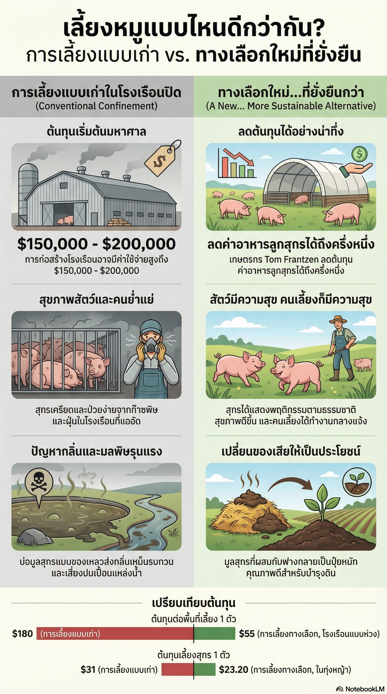
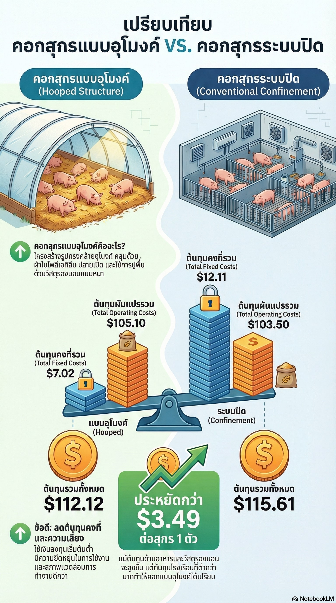

งานวิจัยล่าสุด
โมเดลฟาร์มหมูหลุมยั่งยืน
สรุปการออกแบบและผลลัพธ์ของโมเดลฟาร์มหมูหลุมเพื่อความยั่งยืน ช่วยลดต้นทุนการผลิตและพัฒนาการจัดการฟาร์มอย่างเป็นระบบ.
แสดงงานวิจัยล่าสุดแบบภาพขนาดใหญ่เพียงไม่กี่รายการ และสรุปรายการที่เหลือในรูปแบบลิสต์ เพื่อให้หน้าไม่ยาวเกินไปเมื่อมีงานวิจัยเพิ่มขึ้น

สรุปการออกแบบและผลลัพธ์ของโมเดลฟาร์มหมูหลุมเพื่อความยั่งยืน ช่วยลดต้นทุนการผลิตและพัฒนาการจัดการฟาร์มอย่างเป็นระบบ.

รวมแนวทางปฏิบัติและผลการทดลองภาคสนามเพื่อควบคุมความชื้นในคอก ลดกลิ่น และช่วยให้สภาพแวดล้อมในฟาร์มมีเสถียรภาพมากขึ้น.
รายการที่เหลือจะแสดงเป็นลิสต์แบบย่อ เพื่อให้เลื่อนดูและค้นหาได้เร็วขึ้น
วิเคราะห์ความหลากหลายของจุลินทรีย์ในวัสดุรองพื้นและบทบาทในการลดกลิ่น เพื่อปรับปรุงสภาพแวดล้อมในคอกสุกร.
ศึกษาความคุ้มทุน โครงสร้างโรงเรือน และผลกระทบต่อการจัดการฟาร์ม เมื่อเปรียบเทียบระหว่างระบบเลี้ยงที่ต่างกัน.